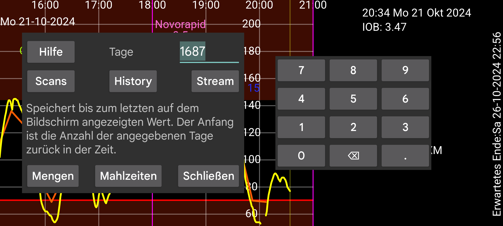

Exportieren Sie Daten aus Juggluco in eine Datei.
Mahlzeiten werden im HTML gespeichert. Alle anderen Daten werden im .tsv-Format (Tab-Separated Values) gespeichert. Dies kann in Programmen wie LibreOffice Calc, Microsoft Excel, Mathematica oder R geladen werden. Es ist eine Art CSV mit Tabulatoren anstelle von Kommas, die zum Trennen von Elementen verwendet werden. Zeichen werden UTF8 codiert.
Die Bedeutung der Spalten finden Sie unter https://www.juggluco.nl/Juggluco/webserver.html .
Tage: Ab Juggluco 7.1.0 können Sie die Anzahl der zu speichernden Tage auswählen. Das Enddatum ist der rechte Rand des Bildschirms. Wenn Sie frühere Daten in Juggluco anzeigen, werden nur alte Daten exportiert (dasselbe wie im linken mittleren Menü -> Statistiken).
Kalibriert: Kalibrierte Werte speichern. Mit dieser Einstellung speichern Scans, Stream und History für alle Elemente sowohl den kalibrierten als auch den Rohwert. Im Libreview-Format wird, falls verfügbar, nur der kalibrierte Wert gespeichert, andernfalls der unkalibrierte Wert.
Ab Juggluco 7.1.0 ist es auch möglich, diese Daten über den Webserver in Juggluco zu empfangen (Linkes Menü->Einstellungen->Daten austauschen->Webserver), siehe https://www.juggluco.nl/Juggluco/webserver.html
Libreview: Daten im Libreview-Format speichern. Dies ermöglicht den Import von Daten von Nicht-Freestyle-Libre-Sensoren in Programme und Webdienste, die dieses Format benötigen. Für Dexcom-Sensoren werden die 5-Minuten-Werte gespeichert, für Sibionics-Sensoren alle 5 Minuten ein Stream-Wert. Auch die Historywerte der Libre-Sensoren 0, 2 und 3 werden gespeichert. Insulindosen, Kohlenhydrate und Bemerkungen werden erst gespeichert, nachdem Sie diesen Kategorien unter linkem Menü → Einstellungen → Daten austauschen → Libreview → Mengen senden Etiketten zugewiesen haben.